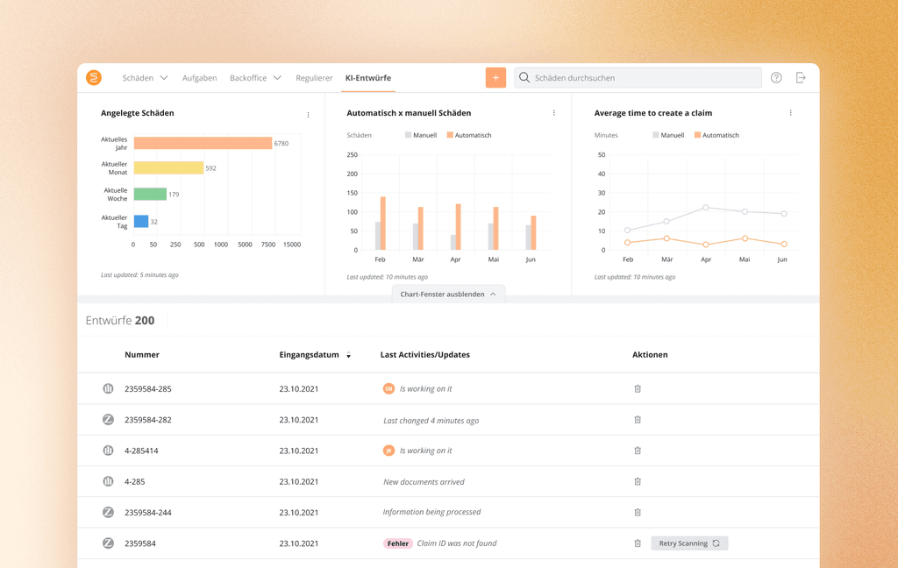

AI Claim Intake.
Teaching an AI to read insurance documents the way our backoffice users do — and shrinking the average claim entry from 15 minutes to under 5.

Backoffice users at our insurance clients spent 15+ minutes copying data from policy documents into our software, claim by claim. During accumulation events — a storm damaging an entire neighborhood — hundreds of claims could pile up overnight.
End-to-end product design. User research, flows, UI iterations, prototypes and moderated tests. Worked with a PM and engineers and led the design of both the visible interface and the invisible logic behind it.
Figma for design and prototypes. Miro for flow mapping and brainstorms. Benchmark the existing manual process through user interviews.
a claim · before AI
a claim · with AI support
data-entry time
from each document

Discover
Mapped the data the AI would need to read — Insurer, ID, Address, Type of Damage, Policyholder name, and a dozen more. Audited the existing flow in Figma and Mixpanel to find every manual touchpoint worth automating.

Define
Drew the user flow with one rule on top: most of the AI work should be invisible. The user only meets the interactive surface when there's a draft to review. Everything else — extraction, matching, drafting — happens silently in the background.

Design & Validate
Sketched the visible interface, iterated with the team, then booked moderated calls. Tested Figma prototypes with real backoffice users, refined the draft-review pattern, and partnered with the AI team on confidence indicators for edge cases.
Prompts are everything.
Without a comprehensive prompt, the AI's output drifts. We spent more time refining the prompt than tuning the model — and it was the right ratio.
The stack matters.
Different AI stacks yield different results, even on top of the same foundation model. Test multiple approaches before committing — the gap between options is wider than it looks on a vendor page.
Trust is local.
In Germany, much of insurance bureaucracy still arrives by paper and stamp. We designed for skeptics: AI suggestions are always drafts, never decisions, and every approval is an explicit user act.
Invisible is intentional.
Most of the feature operates in the background — extracting, matching, drafting. The user only meets the interactive surface when there's a draft to review. Less surface means less to distrust.
The hardest part wasn't teaching the AI to read documents. It was earning users' trust — choosing what stays invisible, what asks for confirmation, and what users see only once. Automation only feels like help when it doesn't feel like surveillance.